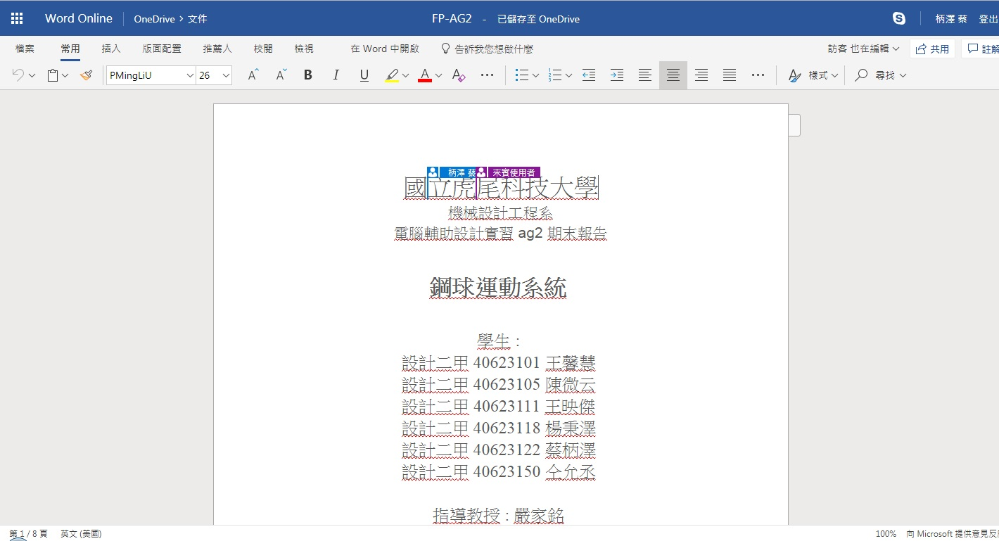

2018 Fall-AG2-Final Project website
Home
Site Map
reveal
blog
Introduction
Course
Onshape
Part
40623105
40623118
V-rep
eBook
Simulation test
Experience
第11週
第12週
第13週
第14週
第15週
第16週
第17週
Personal film
Final Project
Google docs
Attend＆Absence
Final Project <<
Previous
Next
>> Attend＆Absence
Google docs
只要在共用合作功能裡輸入同樣有Gmail 帳號之人的電子郵件地址，就能邀請對方共同參與，編輯同一份文件，被邀請者若要進行編輯或檢視，只要登入就能開始存取。
PDF雲端協同

Final Project <<
Previous
Next
>> Attend＆Absence